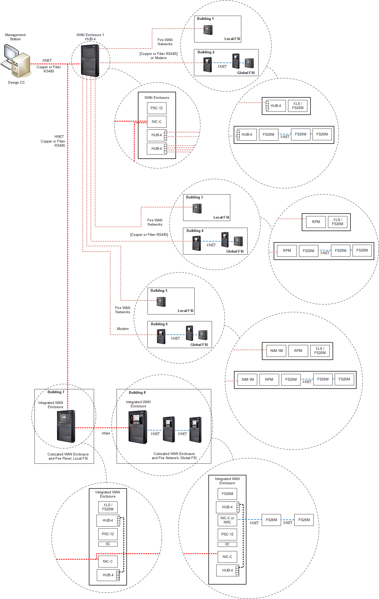
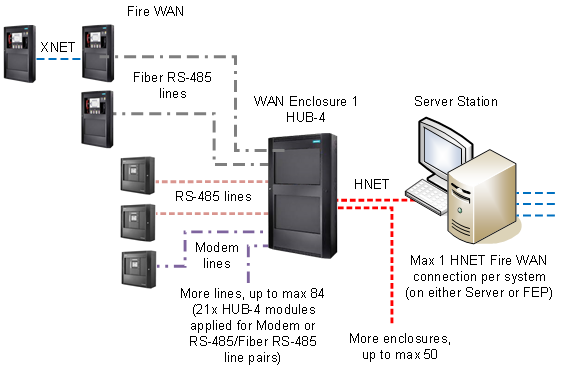
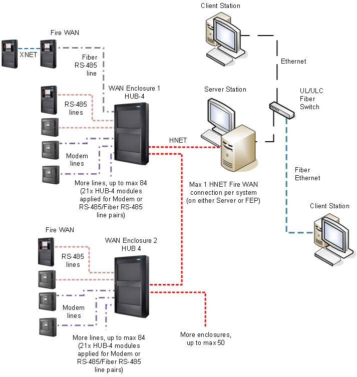
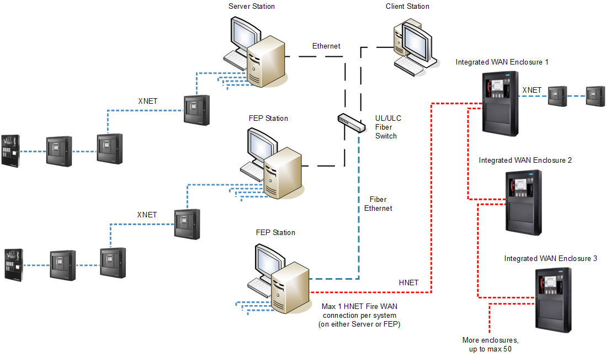
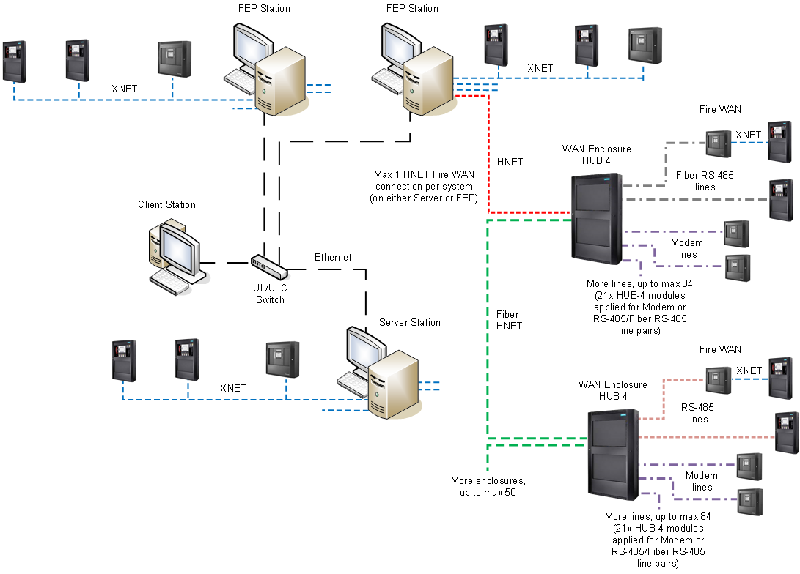
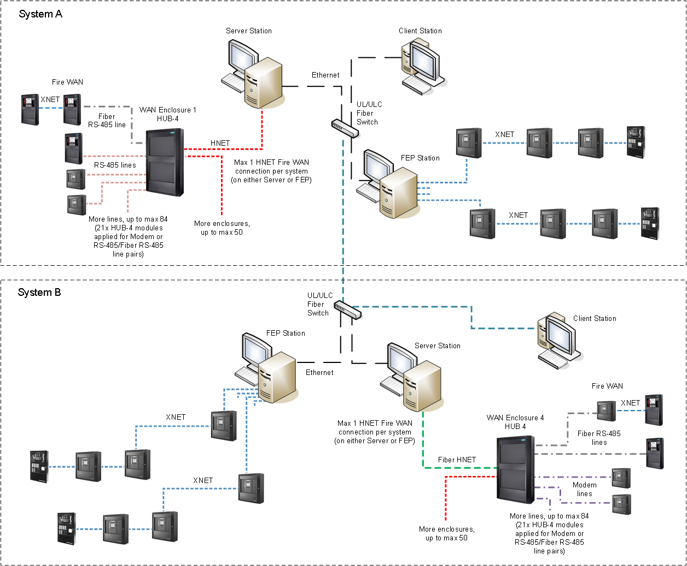
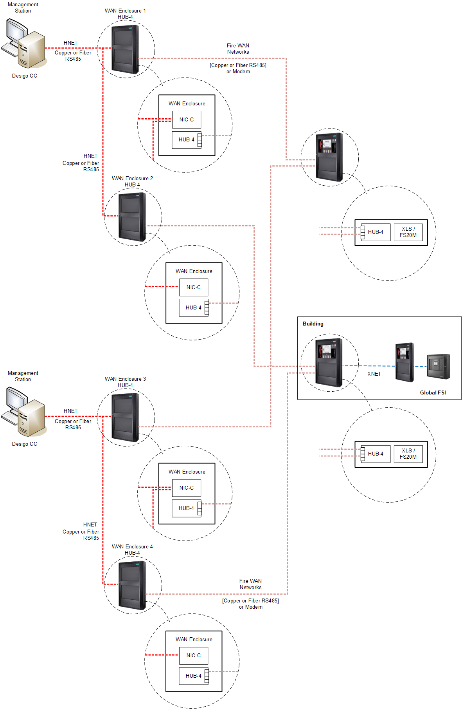

Fire WAN System Architectures
This section illustrates a full set of examples of valid Desigo CC architectures with Fire WAN networks.
Fire WAN Components
The Fire WAN networks can include the following units:
- FireFinder XLS fire control panels and XLSV voice control panels, compliant with UL 864 9th edition and supported with full control from management stations (RGD mode) in Local FSI mode.
- Desigo Fire Safety Modular and Cerberus Pro Modular fire control panels. compliant with UL 864 10th edition and supported with full control from management stations in Local and Global FSI mode.
- Desigo Fire Safety Modular and Cerberus Pro Modular voice control panels, compliant with UL 864 10th edition and supported in monitor-only from management stations in Local and Global FSI mode.
- Fire WAN Enclosures equipped with HUB-4 interface modules.
- Integrated WAN Enclosure: a type of Fire WAN Enclosure that combines a Fire Alarm Control Panel and WAN Enclosure modules, sharing the same power supply, isolated by an IIC card to separate the FACP modules and the WAN Enclosure modules.
- Desigo CC management stations.
NOTE: For Zeus and firmware compatibility, see Fire WAN Limits and Compatibility.
Fire WAN Connections and Structure
The figure below illustrates the supported Fire WAN connections with the internal element structure.
The example includes:
- WAN Enclosure connected to a fire control panel in Local FSI mode (Buildings 1, 3, 5).
- WAN Enclosure connected to an XNET in Global FSI mode (Buildings 2, 4, 6).
- Integrated WAN Enclosure (Building 7).
- Integrated WAN Enclosure with an XNET (Building 8).

NOTE: If remote fire panels or enclosures are connected via FN2013/FN2014 Fiber Module, the panels must be configured to supervise individual fiber disconnections via input devices (see FN2013/FN2014 Installation Instructions A6V12093642_en_c II).
Stand-Alone Station Architecture
In single-station systems, the Fire WAN HUB-4 Enclosures are connected to a stand-alone management station via HNET.
Fire networks connections can be Modem, RS-485, or fiber.

| HNET RS-485 line: Class B or Class X |
| HUB4 RS-485 line: Class B or Class X |
| HUB4 Modem line: Class B |
| HUB4 RS-485 over Fiber in Single Mode (Class B) or Multi Mode (Class A) |
| XNET RS-485: Class B or Class X |


NOTE: Class A = DCLA; Class B = DCLB; Class X = DCLC
Client/Server Architecture
In client/server solutions, the HNET connection is implemented on the server station that provides communication services to client stations.
Multiple Fire WAN Enclosures can be wired in series on the same HNET. However, this is not recommended for heavily loaded WAN enclosures.
You can use a distributed architecture, as illustrated further below for large architectures.
The management stations and the Ethernet switch must be within 20 ft (UL) or 18 m (ULC) of each other, and copper network cables must be mechanically protected by UL 864 / ULC S527-compliant conduits.
A listed switch must be used. A fiber connection between stations is also possible via a listed fiber switch.

| Ethernet wiring in UL/ULC listed conduits, up to 20 ft (UL) or 18 m (ULC) between stations and network switches |
| Ethernet over Fiber in Single Mode (Class B) or Multi Mode (Class X) |
| HNET RS-485 line: Class B or Class X |
| HUB4 RS-485 line: Class B or Class A |
| HUB4 Modem line: Class B |
| HUB4 RS-485 over Fiber in Single Mode (Class B) or Multi Mode (Class A) |
| XNET RS-485: Class B or Class X |


NOTE: Class A = DCLA; Class B = DCLB; Class X = DCLC
Client/Server/FEP Architecture
Larger client/server solutions may include Front-End Processor (FEP) stations to connect Desigo CC to the Fire WAN as well as XNETs.

| Ethernet wiring in UL/ULC listed conduits, up to 20 ft (UL) or 18 m (ULC) between stations and network switches |
| Ethernet over Fiber in Single Mode (Class B) or Multi Mode (Class X) |
| HNET RS-485 line: Class B or Class X |
| XNET RS-485: Class B or Class X |
NOTE: Class A = DCLA; Class B = DCLB; Class X = DCLC
Local and Wide-Area Fire System
XNET and Fire WAN networks can be both connected to Desigo CC server or FEP stations in a combined fire system

| Ethernet wiring in UL/ULC listed conduits, up to 20 ft (UL) or 18 m (ULC) between stations and network switches |
| HNET RS-485 line: Class B or Class X |
HNET RS-485 over Fiber in Single Mode (Class B) or Multi Mode (Class X) | |
| HUB4 RS-485 line: Class B or Class A |
| HUB4 Modem line: Class B |
| HUB4 RS-485 over Fiber in Single Mode (Class B) or Multi Mode (Class A) |
| XNET RS-485: Class B or Class X |
NOTE: Class A = DCLA; Class B = DCLB; Class X = DCLC
Distributed Fire WAN Systems Architecture
Large-size solutions may include multiple local systems in a distributed architecture.
This allows to support multiple HNET Fire WAN connections, as each system can handle one connection
Each local system is based on a project, and multiple projects can be deployed to one or more interconnected server computers.
The client stations can access data from all projects.

| Ethernet wiring in UL/ULC listed conduits, up to 20 ft (UL) or 18 m (ULC) between stations and network switches |
| Ethernet over Fiber in Single Mode (Class B) or Multi Mode (Class X) |
| HNET RS-485 line: Class B or Class X |
HNET RS-485 over Fiber in Single Mode (Class B) or Multi Mode (Class X) | |
| HUB4 RS-485 line: Class B or Class A |
| HUB4 Modem line: Class B |
| HUB4 RS-485 over Fiber in Single Mode (Class B) or Multi Mode (Class A) |
| XNET RS-485: Class B or Class X |
NOTE: Class A = DCLA; Class B = DCLB; Class X = DCLC
Redundant Server and Enclosure
Desigo CC provides a redundancy concept where a pair of duplicate Desigo CC servers are placed in the same room and all infrastructure and hardware between the Desigo CC servers and the panels must be duplicated. Note that this includes duplicate WAN enclosures and duplicate communication lines to the panels.
In addition, each panel is aware of these two Desigo CC servers and communicates with them in parallel.
